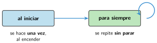

Eventos, variables y bucles en una placa
🤔 Pienso5 min
Qué hago aquí: Piensa un momento y contesta con lo que ya sabes. No pasa nada si no lo sabes: es para empezar.
Una alarma de incendios vigila el humo todo el rato. Escribe otro aparato que vigile sin parar.
📖 Leo y aprendo15 min
Qué hago aquí: Lee despacio, mira los dibujos y los ejemplos, y quédate con la idea clave del final.
En la Micro:Bit se programa igual que en Code.org: eventos, variables, decisiones y bucles. Solo cambia el aspecto de los bloques.

Las variables se crean en la categoría Variables. Sus bloques son establecer (dar un valor) y cambiar (sumar). El bloque pausa (ms) espera: 1000 ms es 1 segundo.
✏️ Hago25 min
Qué hago aquí: Haz las actividades en orden. Empieza siempre por las básicas.
¿Cuántas veces se hace lo que hay en al iniciar? ¿Y en para siempre?
¿Cuántos milisegundos son 2 segundos?
Programa el contador de vueltas. Pruébalo en el simulador.
Programa la alarma de calor. ¿A partir de qué temperatura sale la cara triste?
Haz una lámpara automática: si hay poca luz (menos de 50), enciende todos los LED; si no, bórralos. ¿Dónde pones la decisión? ¿Por qué?
✏️ Puedes responder escribiendo, con un dibujo o un esquema, o contándolo en voz alta.
Arregla el programa. Este contador de vueltas siempre enseña un 1, por muchas veces que pulses A. Ábrelo, pruébalo en el simulador y busca el error. ¿Qué bloque está mal colocado? ¿Dónde tiene que ir?
💻 Ábrelo en MakeCode El programa se abre en MakeCode, listo para probar y cambiar.
🚀 Amplío (si quieres saber más)
Qué hago aquí: ¿Has terminado? Lee la curiosidad o elige el reto. Es voluntario.
Haz un cronómetro: al pulsar A empieza a contar segundos y al pulsar B se para y muestra el tiempo.
✅ Compruebo5 min
Qué hago aquí: Contesta sin mirar la ficha y marca cómo lo llevas.